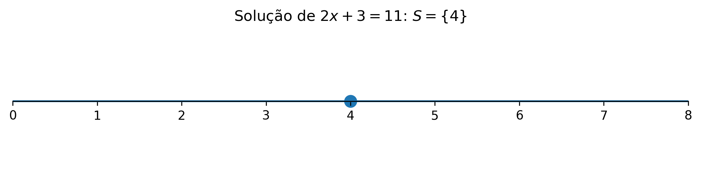
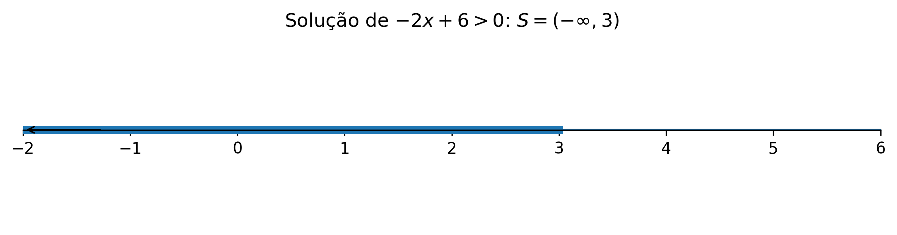
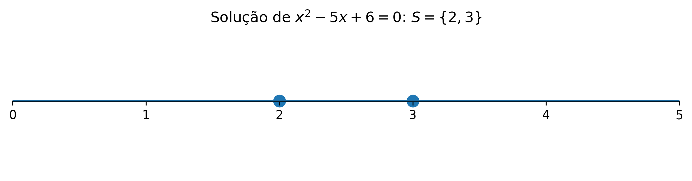
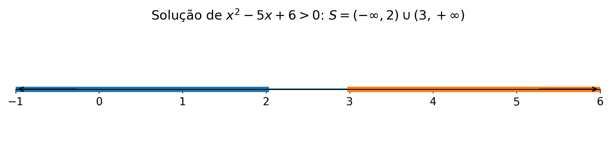
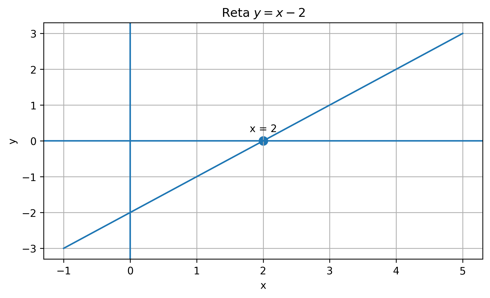
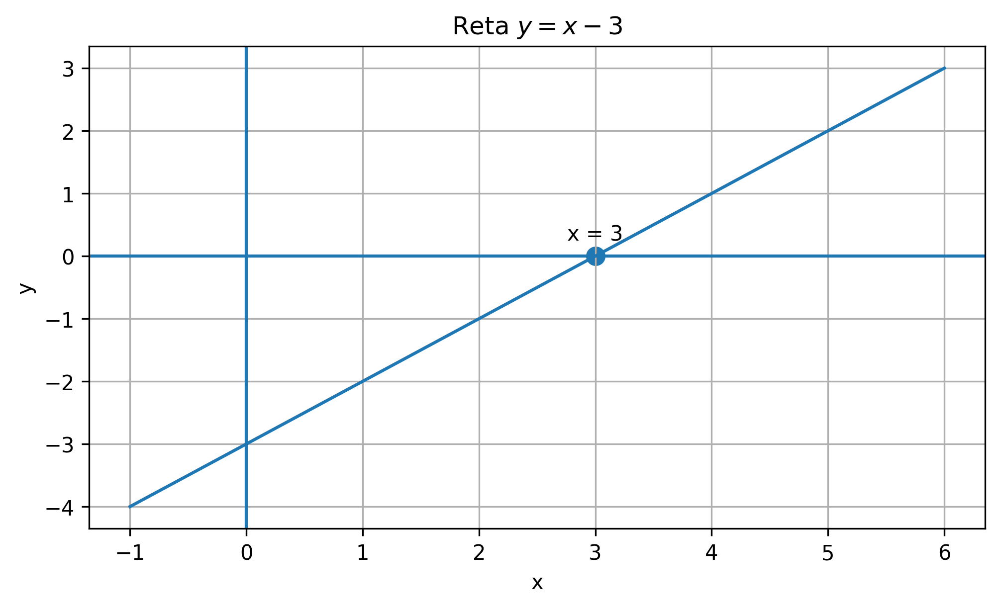
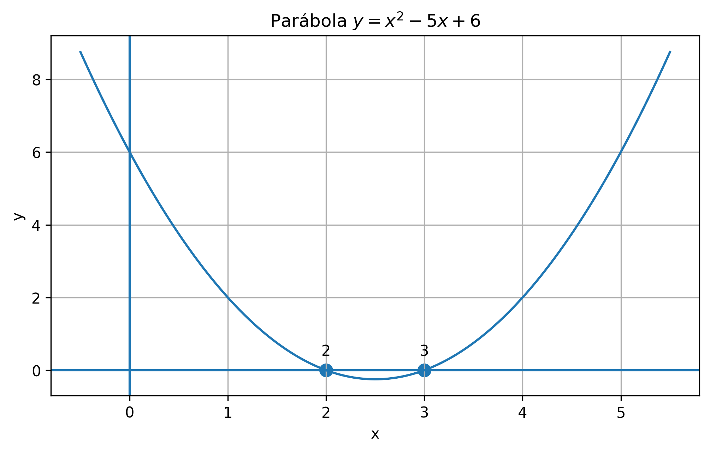
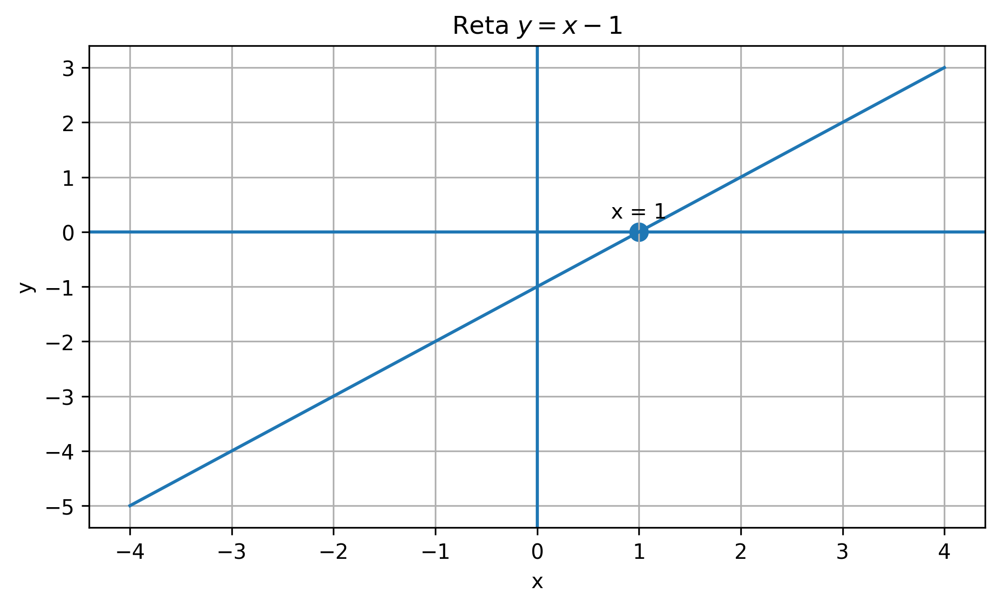
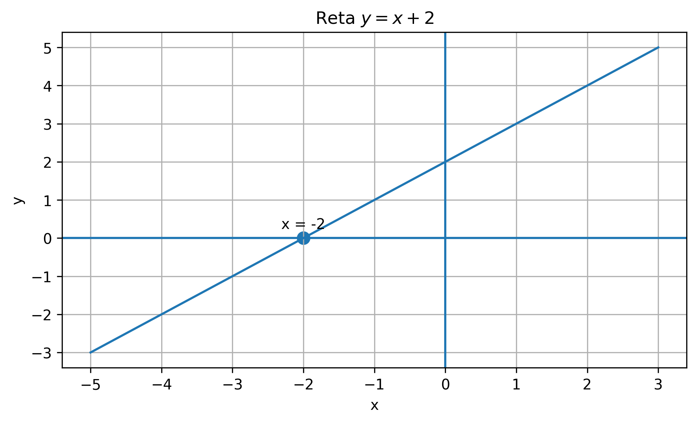
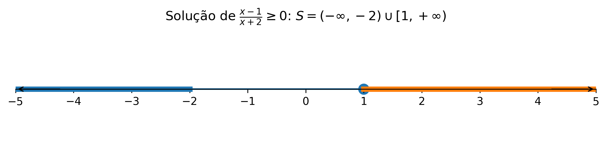

📘 Módulo 1.5: Equações e Inequações
🏠 ← Sumário do Curso · ← Cursos de Matemática · ← Seção de Matemática
🎯 Post Anterior: 👉 1.4 Números Reais e Intervalos
Como resolver condições algébricas e interpretar suas soluções na reta real?
- Revisar equações e inequações como ferramentas para descrever condições matemáticas;
- Interpretar soluções em linguagem algébrica, intervalar e gráfica;
- Preparar o uso de equações, inequações e estudo de sinais no Cálculo.
1 📘 Equações e Inequações
No estudo dos números reais, dos intervalos e do valor absoluto, aprendemos a descrever subconjuntos da reta real. Agora vamos usar essa linguagem para resolver equações e inequações.
Uma equação pergunta:
Para quais valores de \(x\) duas expressões são iguais?
Uma inequação pergunta:
Para quais valores de \(x\) uma expressão é maior, menor, maior ou igual, ou menor ou igual a outra?
Em ambos os casos, a resposta não é apenas um número isolado. Muitas vezes a resposta é um conjunto de números reais, que pode ser descrito por intervalos, uniões de intervalos ou pontos isolados.
1.1 💡 A ideia de solução
Considere a equação
\[ 2x+3=11. \]
Resolver essa equação significa encontrar todos os valores reais de \(x\) que tornam a igualdade verdadeira. Subtraindo \(3\) dos dois lados, obtemos
\[ 2x=8. \]
Dividindo por \(2\),
\[ x=4. \]
Portanto, o conjunto solução é
\[ S=\{4\}. \]
Nesse caso, a solução é formada por um único número.
A reta real abaixo representa esse conjunto-solução com um único ponto:

Já na inequação
\[ 2x+3<11, \]
subtraímos \(3\) dos dois lados:
\[ 2x<8. \]
Dividindo por \(2\),
\[ x<4. \]
Agora a solução não é um número isolado, mas todo o intervalo
\[ S=(-\infty,4). \]
1.2 🧮 Equações lineares
Uma equação linear em uma variável pode ser escrita, depois de simplificações, na forma
\[ ax+b=0, \]
com \(a\neq 0\).
Nesse caso,
\[ ax=-b \]
e, portanto,
\[ x=-\frac{b}{a}. \]
Por exemplo:
\[ 3x-12=0. \]
Então
\[ 3x=12 \]
e
\[ x=4. \]
Logo,
\[ S=\{4\}. \]
1.3 ⚖️ Inequações lineares
Uma inequação linear pode ter formas como
\[ ax+b>0,\qquad ax+b<0,\qquad ax+b\geq 0,\qquad ax+b\leq 0. \]
A resolução é parecida com a de uma equação, mas há um cuidado essencial:
Ao multiplicar ou dividir uma inequação por um número negativo, o sentido da desigualdade se inverte.
Por exemplo:
\[ -2x+6>0. \]
Subtraindo \(6\) dos dois lados:
\[ -2x>-6. \]
Agora dividimos por \(-2\). Como estamos dividindo por um número negativo, invertemos o sinal:
\[ x<3. \]
Assim,
\[ S=(-\infty,3). \]
Na reta real, a solução aparece como uma semirreta para a esquerda, com bolinha aberta em \(3\):

1.4 🧮 Equações quadráticas
Uma equação quadrática tem a forma
\[ ax^2+bx+c=0, \]
com \(a\neq 0\).
O método mais conhecido para resolvê-la é a fórmula de Bhaskara:
\[ x=\frac{-b\pm\sqrt{\Delta}}{2a}, \]
onde
\[ \Delta=b^2-4ac. \]
A quantidade \(\Delta\) é chamada de discriminante.
- Se \(\Delta>0\), há duas raízes reais distintas.
- Se \(\Delta=0\), há uma raiz real dupla.
- Se \(\Delta<0\), não há raízes reais.
Por exemplo:
\[ x^2-5x+6=0. \]
Temos
\[ a=1,\qquad b=-5,\qquad c=6. \]
Logo,
\[ \Delta=(-5)^2-4\cdot 1\cdot 6=25-24=1. \]
Assim,
\[ x=\frac{5\pm 1}{2}. \]
Portanto,
\[ x=2 \]
ou
\[ x=3. \]
Logo,
\[ S=\{2,3\}. \]
Na reta real, isso corresponde a dois pontos isolados:

1.5 ⚖️ Inequações quadráticas
Para resolver uma inequação quadrática, é útil pensar no sinal de um produto.
Considere
\[ x^2-5x+6>0. \]
Fatorando,
\[ x^2-5x+6=(x-2)(x-3). \]
Então precisamos resolver
\[ (x-2)(x-3)>0. \]
Os pontos críticos são
\[ x=2 \]
e
\[ x=3. \]
Eles dividem a reta em três intervalos:
\[ (-\infty,2),\qquad (2,3),\qquad (3,+\infty). \]
Testando o sinal em cada intervalo:
- em \((-\infty,2)\), os dois fatores são negativos, então o produto é positivo;
- em \((2,3)\), um fator é positivo e o outro negativo, então o produto é negativo;
- em \((3,+\infty)\), os dois fatores são positivos, então o produto é positivo.
Como queremos o produto positivo, obtemos
\[ S=(-\infty,2)\cup(3,+\infty). \]
Na reta real, a solução é a união de dois intervalos abertos:

1.6 📊 Estudo gráfico do sinal e tabela de sinais
A tabela de sinais não precisa ser vista como um truque mecânico. Ela pode ser entendida a partir do estudo gráfico das funções associadas aos fatores do produto ou do quociente.
A ideia central é simples:
- quando o gráfico de uma função está acima do eixo \(x\), a função é positiva;
- quando o gráfico está abaixo do eixo \(x\), a função é negativa;
- quando o gráfico toca ou cruza o eixo \(x\), temos um zero da função.
Assim, a tabela de sinais organiza, em forma resumida, aquilo que já observamos graficamente.
1.7 📐 Estudo gráfico dos fatores em uma inequação produto
Retomemos a inequação
\[ (x-2)(x-3)>0. \]
Antes de montar a tabela de sinais, podemos estudar os gráficos dos fatores separadamente.
1.7.1 📈 Fator 1: a reta \(y=x-2\)
A reta \(y=x-2\) zera em \(x=2\).
- Para \(x<2\), temos \(x-2<0\), então o gráfico fica abaixo do eixo \(x\).
- Para \(x>2\), temos \(x-2>0\), então o gráfico fica acima do eixo \(x\).

1.7.2 📈 Fator 2: a reta \(y=x-3\)
A reta \(y=x-3\) zera em \(x=3\).
- Para \(x<3\), temos \(x-3<0\), então o gráfico fica abaixo do eixo \(x\).
- Para \(x>3\), temos \(x-3>0\), então o gráfico fica acima do eixo \(x\).

1.7.3 📊 Tabela de sinais do produto
Agora que já sabemos o sinal de cada fator, podemos resumir tudo na tabela a seguir.
| Intervalo | \(x-2\) | \(x-3\) | \((x-2)(x-3)\) |
|---|---|---|---|
| \((-\infty,2)\) | \(-\) | \(-\) | \(+\) |
| \((2,3)\) | \(+\) | \(-\) | \(-\) |
| \((3,+\infty)\) | \(+\) | \(+\) | \(+\) |
Como queremos
\[ (x-2)(x-3)>0, \]
escolhemos os intervalos em que o produto é positivo. Portanto,
\[ S=(-\infty,2)\cup(3,+\infty). \]
1.7.4 🧮 Confirmação pela parábola associada
Também podemos juntar os fatores e olhar diretamente para a função
\[ y=(x-2)(x-3)=x^2-5x+6. \]
Seu gráfico é uma parábola com raízes em \(x=2\) e \(x=3\).
- Fora do intervalo entre as raízes, a parábola fica acima do eixo \(x\), então a função é positiva;
- Entre as raízes, a parábola fica abaixo do eixo \(x\), então a função é negativa.

Esse estudo gráfico confirma exatamente a tabela de sinais.
1.8 ➗ Estudo gráfico dos fatores em uma inequação quociente
Agora consideremos a inequação racional
\[ \frac{x-1}{x+2}\geq 0. \]
Novamente, começamos estudando separadamente o numerador e o denominador.
1.8.1 📈 Numerador: a reta \(y=x-1\)
A reta \(y=x-1\) zera em \(x=1\).
- Para \(x<1\), o numerador é negativo;
- Para \(x>1\), o numerador é positivo.

1.8.2 📈 Denominador: a reta \(y=x+2\)
A reta \(y=x+2\) zera em \(x=-2\).
- Para \(x<-2\), o denominador é negativo;
- Para \(x>-2\), o denominador é positivo.

1.8.3 📊 Tabela de sinais do quociente
Os pontos críticos são \(x=-2\) e \(x=1\). Eles dividem a reta nos intervalos:
\[ (-\infty,-2),\qquad (-2,1),\qquad (1,+\infty). \]
A tabela de sinais fica:
| Intervalo | \(x-1\) | \(x+2\) | \(\dfrac{x-1}{x+2}\) |
|---|---|---|---|
| \((-\infty,-2)\) | \(-\) | \(-\) | \(+\) |
| \((-2,1)\) | \(-\) | \(+\) | \(-\) |
| \((1,+\infty)\) | \(+\) | \(+\) | \(+\) |
Como queremos
\[ \frac{x-1}{x+2}\geq 0, \]
escolhemos os intervalos em que o quociente é positivo e também o ponto em que o numerador zera.
Assim:
- \(x=-2\) fica excluído, porque zera o denominador;
- \(x=1\) fica incluído, porque zera o numerador e a desigualdade aceita igualdade.
Logo,
\[ S=(-\infty,-2)\cup[1,+\infty). \]
Esse procedimento mostra que a tabela de sinais é um resumo do estudo gráfico do sinal de cada fator.
1.9 ⚖️ Inequações racionais
Uma inequação racional envolve quocientes de expressões algébricas. Por exemplo:
\[ \frac{x-1}{x+2}\geq 0. \]
Aqui há dois pontos importantes:
- o numerador zera em \(x=1\);
- o denominador zera em \(x=-2\), mas esse valor não pertence ao domínio.
Os pontos \(-2\) e \(1\) dividem a reta em três intervalos:
\[ (-\infty,-2),\qquad (-2,1),\qquad (1,+\infty). \]
Analisando sinais:
- em \((-\infty,-2)\), numerador e denominador são negativos, então o quociente é positivo;
- em \((-2,1)\), numerador negativo e denominador positivo, então o quociente é negativo;
- em \((1,+\infty)\), numerador e denominador positivos, então o quociente é positivo.
Como a inequação é
\[ \frac{x-1}{x+2}\geq 0, \]
incluímos \(x=1\), pois o numerador pode ser zero, mas excluímos \(x=-2\), pois o denominador não pode ser zero.
Logo,
\[ S=(-\infty,-2)\cup[1,+\infty). \]
A representação na reta real ajuda a distinguir o ponto excluído do domínio e o ponto incluído na solução:

1.10 🧮 Equações, inequações e domínio
No Cálculo, equações e inequações aparecem o tempo todo na determinação de domínios.
Por exemplo, para a função
\[ f(x)=\sqrt{x-4}, \]
precisamos que
\[ x-4\geq 0. \]
Logo,
\[ x\geq 4, \]
e o domínio é
\[ [4,+\infty). \]
Para a função
\[ g(x)=\frac{1}{x^2-9}, \]
precisamos que
\[ x^2-9\neq 0. \]
Como
\[ x^2-9=(x-3)(x+3), \]
temos
\[ x\neq 3 \]
e
\[ x\neq -3. \]
Portanto,
\[ D_g=(-\infty,-3)\cup(-3,3)\cup(3,+\infty). \]
1.11 🌉 Por que isso importa para o Cálculo?
Antes de estudar limites, derivadas e integrais, precisamos saber onde uma função está definida, em quais intervalos uma expressão é positiva ou negativa e quais valores tornam uma condição verdadeira.
Por isso, equações e inequações não são apenas técnicas algébricas. Elas são ferramentas para investigar o comportamento das funções.
No próximo passo, começaremos a organizar as principais famílias de funções que aparecem no Cálculo.
1.12 🧾 Quadro-resumo
| Ideia | Significado | Papel no Cálculo |
|---|---|---|
| Equação | Igualdade com incógnita | Usada para encontrar valores específicos que satisfazem uma condição |
| Conjunto-solução | Conjunto de todos os valores que resolvem uma equação ou inequação | Pode ser ponto, intervalo ou união de intervalos |
| Equação linear | Equação do tipo \(ax+b=0\), com \(a\neq 0\) | Produz, em geral, uma única solução real |
| Inequação linear | Desigualdade envolvendo uma expressão de primeiro grau | Produz intervalos ou semirretas na reta real |
| Multiplicação por número negativo | Operação que inverte o sentido da desigualdade | É um cuidado essencial na resolução de inequações |
| Equação quadrática | Equação do tipo \(ax^2+bx+c=0\), com \(a\neq 0\) | Suas soluções são os zeros de uma parábola |
| Inequação quadrática | Desigualdade envolvendo uma expressão de segundo grau | Pode ser resolvida por fatoração, gráfico ou tabela de sinais |
| Tabela de sinais | Organização dos sinais dos fatores em cada intervalo | Ajuda a resolver inequações produto e quociente |
| Inequação racional | Inequação envolvendo quociente de expressões algébricas | Exige atenção ao domínio e aos pontos excluídos |
| Domínio | Conjunto dos valores permitidos para \(x\) | Muitas vezes é determinado por equações e inequações |
2 🧪 Exercícios propostos
2.1 🧪 Exercício 1
Resolva as equações lineares:
- \(3x-9=0\)
- \(2x+5=17\)
- \(-4x+8=0\)
2.2 🧪 Exercício 2
Resolva as inequações lineares e escreva a resposta em notação de intervalo:
- \(2x-6>0\)
- \(5-x\leq 2\)
- \(-3x+12>0\)
2.3 🧪 Exercício 3
Resolva as equações quadráticas:
- \(x^2-9=0\)
- \(x^2-5x+6=0\)
- \(x^2+2x+1=0\)
2.4 🧪 Exercício 4
Resolva as inequações quadráticas:
- \(x^2-4>0\)
- \(x^2-4\leq 0\)
- \(x^2-3x+2>0\)
2.5 🧪 Exercício 5
Determine o domínio real das funções:
- \(f(x)=\sqrt{x+2}\)
- \(g(x)=\dfrac{1}{x-5}\)
- \(h(x)=\dfrac{1}{x^2-4}\)
- \(p(x)=\sqrt{4-x}\)
3 ✅ Gabarito comentado
3.1 🧪 Exercício 1
\(3x-9=0\) implica \(3x=9\), logo \(x=3\). Portanto, \(S=\{3\}\).
\(2x+5=17\) implica \(2x=12\), logo \(x=6\). Portanto, \(S=\{6\}\).
\(-4x+8=0\) implica \(-4x=-8\), logo \(x=2\). Portanto, \(S=\{2\}\).
3.2 🧪 Exercício 2
\(2x-6>0\) implica \(2x>6\), logo \(x>3\). Portanto, \(S=(3,+\infty)\).
\(5-x\leq 2\) implica \(-x\leq -3\). Dividindo por \(-1\), invertemos o sinal: \(x\geq 3\). Portanto, \(S=[3,+\infty)\).
\(-3x+12>0\) implica \(-3x>-12\). Dividindo por \(-3\), invertemos o sinal: \(x<4\). Portanto, \(S=(-\infty,4)\).
3.3 🧪 Exercício 3
\(x^2-9=0\) implica \(x^2=9\), logo \(x=-3\) ou \(x=3\). Portanto, \(S=\{-3,3\}\).
\(x^2-5x+6=0\) fatorando dá \((x-2)(x-3)=0\). Logo, \(S=\{2,3\}\).
\(x^2+2x+1=0\) fatorando dá \((x+1)^2=0\). Logo, \(S=\{-1\}\).
3.4 🧪 Exercício 4
\(x^2-4>0\) equivale a \((x-2)(x+2)>0\). O produto é positivo fora das raízes. Logo, \(S=(-\infty,-2)\cup(2,+\infty)\).
\(x^2-4\leq 0\) equivale a \((x-2)(x+2)\leq 0\). O produto é não positivo entre as raízes, incluindo-as. Logo, \(S=[-2,2]\).
\(x^2-3x+2>0\) equivale a \((x-1)(x-2)>0\). O produto é positivo fora das raízes. Logo, \(S=(-\infty,1)\cup(2,+\infty)\).
3.5 🧪 Exercício 5
Para \(f(x)=\sqrt{x+2}\), precisamos de \(x+2\geq 0\), isto é, \(x\geq -2\). Logo, \(D_f=[-2,+\infty)\).
Para \(g(x)=\dfrac{1}{x-5}\), precisamos de \(x-5\neq 0\), isto é, \(x\neq 5\). Logo, \(D_g=(-\infty,5)\cup(5,+\infty)\).
Para \(h(x)=\dfrac{1}{x^2-4}\), precisamos de \(x^2-4\neq 0\). Como \(x^2-4=(x-2)(x+2)\), temos \(x\neq -2\) e \(x\neq 2\). Logo, \(D_h=(-\infty,-2)\cup(-2,2)\cup(2,+\infty)\).
Para \(p(x)=\sqrt{4-x}\), precisamos de \(4-x\geq 0\), isto é, \(x\leq 4\). Logo, \(D_p=(-\infty,4]\).
4 🧩 Quiz — Equações e Inequações
Q1. Resolver uma equação significa encontrar:
✓Todos os valores da variável que tornam a igualdade verdadeira.
✗Apenas valores positivos da variável.
✗Somente os pontos onde a expressão não está definida.
Q2. Ao dividir uma inequação por um número negativo, devemos:
✗Manter o sentido da desigualdade.
✓Inverter o sentido da desigualdade.
✗Trocar a inequação por uma equação.
Q3. Na inequação racional \(\dfrac{x-1}{x+2}\geq 0\), o valor \(x=-2\) deve ser excluído porque:
✗Ele torna o numerador igual a zero.
✓Ele torna o denominador igual a zero.
✗Ele é sempre negativo.